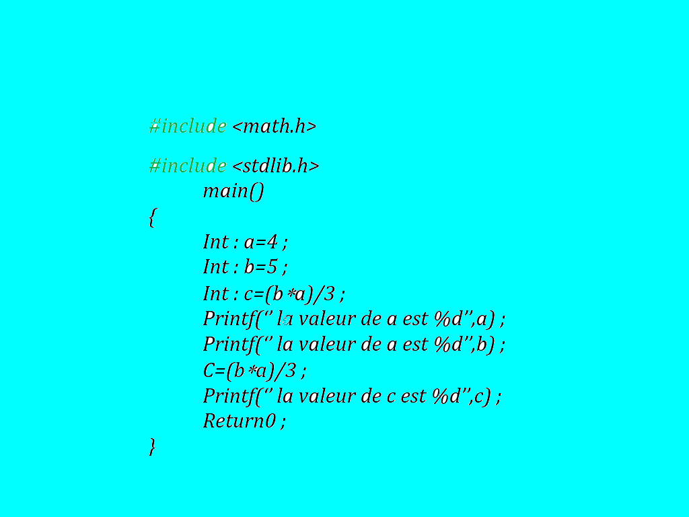
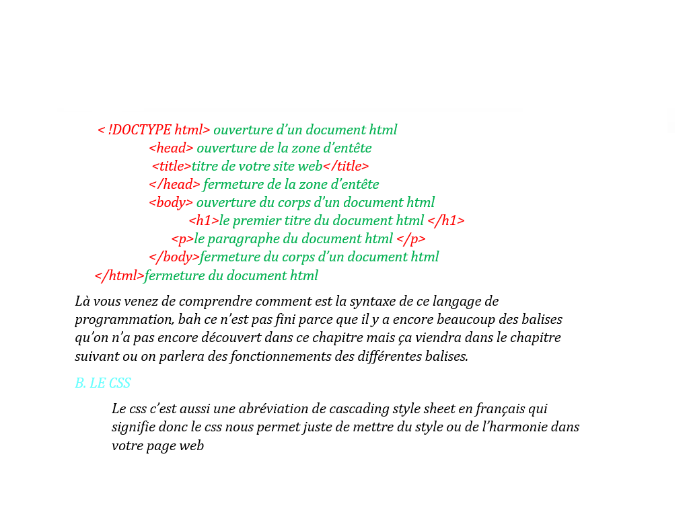

2 La compilation
Le C est un langage compilé (par opposition aux langages interprétés). Cela signifie qu'un programme
C est décrit par un fichier texte, appelé fichier source. Ce fichier n'étant évidemment pas exécutable
par le microprocesseur, il faut le traduire en langage machine. Cette opération est effectuée par un
programme appelé compilateur. La compilation se décompose en fait en 4 phases successives :
1. Le traitement par le préprocesseur : le fichier source est analysé par le préprocesseur qui
effectue des transformations purement textuelles (remplacement de chaînes de caractères, inclusion
d'autres fichiers source
2. La compilation : la compilation proprement dite traduit le fichier généré par le préprocesseur en
assembleur, c'est-à-dire en une suite d'instructions du microprocesseur qui utilisent des mnémoniques
rendant la lecture possible.
3. L'assemblage : cette opération transforme le code assembleur en un fichier binaire, c'est-à-dire
en instructions directement compréhensibles par le processeur. Généralement, la compilation et l'assemblage
se font dans la foulée, sauf si l'on spécifie explicitement que l'on veut le code assembleur. Le fichier
produit par l'assemblage est appelé fichier objet.
4. L'édition de liens : un programme est souvent séparé en plusieurs fichiers source, pour des raisons de
clarté mais aussi parce qu'il fait généralement appel à des librairies de fonctions standard déjà écrites.
Une fois chaque code source assemblé, il faut donc lier entre eux les différents fichiers objets. L'édition
de liens produit alors un fichier dit exécutable.
Les différents types de fichiers utilisés lors de la compilation sont distingués par leur suffixe. Les
fichiers source sont suffixés par .c, les fichiers prétraités par le préprocesseur par .i, les fichiers
assembleur par .s, et les fichiers objet par .o. Les fichiers objets correspondant aux librairies précompilées
ont pour suffixe .a.
Le compilateur C sous UNIX s'appelle cc. On utilisera de préférence le compilateur gcc du projet GNU. Ce
compilateur est livré gratuitement avec sa documentation et ses sources. Par défaut, gcc active toutes les
étapes de la compilation. On le lance par la commande gcc [options] fichier.c [-llibrairies]
Par défaut, le fichier exécutable s'appelle a.out. Le nom de l'exécutable peut être modifié à l'aide de l'option -o.
Les éventuelles librairies sont déclarées par la chaîne -llibrairie. Dans ce cas, le système recherche le fichier
liblibrairie.a dans le répertoire contenant les librairies pré-compilées (généralement /usr/lib/). Par exemple,
pour lier le programme avec la librairie mathématique, on spécifie -lm. Le fichier objet correspondant est libm.a.
Lorsque les librairies pré-compilées ne se trouvent pas dans le répertoire usuel, on spécifie leur chemin d'accès
par l'option -L.
Les options les plus importantes du compilateur gcc sont les suivantes :
-c : supprime l'édition de liens ; produit un fichier objet.
-E : n'active que le préprocesseur (le résultat est envoyé sur la sortie standard).
-g : produit des informations symboliques nécessaires au débogueur.
-Inom-de-répertoire : spécifie le répertoire dans lequel doivent être recherchés les fichiers en-têtes à inclure
(en plus du répertoire courant).
Lnom-de-répertoire : spécifie le répertoire dans lequel doivent être recherchées les librairies précompilées
(En plus du répertoire usuel).
-o nom-de-fichier : spécifie le nom du fichier produit. Par défaut, le exécutable fichier s'appelle a.out.
-O, -O1, -O2, -O3 : options d'optimisations. Sans ces options, le but du compilateur est de minimiser le coût
de la compilation. En rajoutant l'une de ces options, le compilateur tente de réduire la taille du code exécutable
et le temps d'exécution. Les options correspondent à différents niveaux d'optimisation : -O1
(Similaire à -O) correspond à une faible optimisation, -O3 à l'optimisation maximale.
-S : n'active que le préprocesseur et le compilateur ; produit un fichier assembleur.
-v : imprime la liste des commandes exécutées par les différentes étapes de la compilation.
-W : imprime des messages d'avertissement (warning) supplémentaires.
-Wall : imprime tous les messages d'avertissement.
3.Les composants élémentaires du C
Un programme en langage C est constitué des six groupes de composants élémentaires suivants :
• les identificateurs,
• les mots-clefs,
• les constantes,
• les chaînes de caractères,
• les opérateurs,
• les signes de ponctuation.
concernant le langage c on prend juste une petite exemple:

- 3.Les composants élémentaires du C
LE HTML
Le langage HTML tire son origine du langage SGML (Standard Generalized Markup Language).
Il s'agit d'un type particulier d'annotations destiné au WWW et qui correspond à une col
lection de styles reconnaissables par les navigateurs. Un navigateur (en anglais "browser")
est donc un logiciel qui interprète à l'écran les Commandes HTML contenues dans un document
accessible sur le WWW.
Le langage HTML est utilisé sur le WWW depuis 1990. La version actuellement en vigueur est
HTML 2.0. Des discussions sont en cours (voir le document de Berners-Lee et Connolly en
bibliographie) pour l'adoption des nouvelles annotations pour une version HTML 3.0 notamment
en matière de tableaux et de commandes de formatage définissant les exposants et indices.
Le html c’est n’est rien d’autre qu’une abréviation du terme « hyper text markup language en
français c’est un langage de balisage hyper texte, au fait pour mieux comprendre le langage
html il suffit de comprendre d’autres langages de programmation, quand je suis en entrain de
dire ça, c’est parce que chaque langage de programmation as ses propres syntaxes ou ses normes,
donc le html aussi c’est le cas, comme la définition l’indique pour comprendre les fonctionnements
de ce langage de programmation il suffit de bien comprendre les balises, tout comme pour bien comprendre
le langage c il faut savoir ce quoi les directives, ce quoi la fonction, comment déclarer une variable
du type entier, du type flottant…
juste un exemple concernant les differentes balises des bases :
